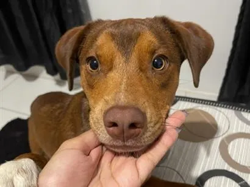
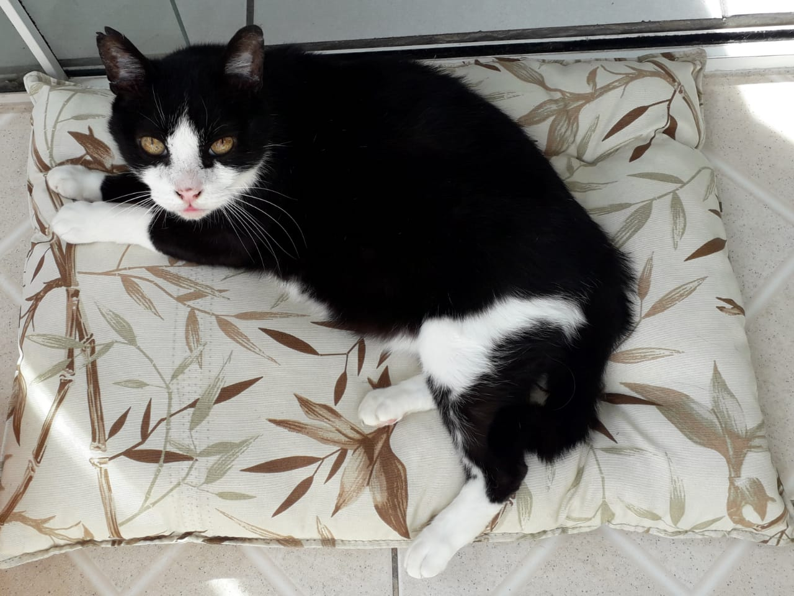
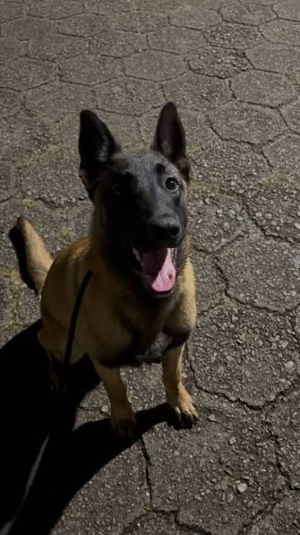
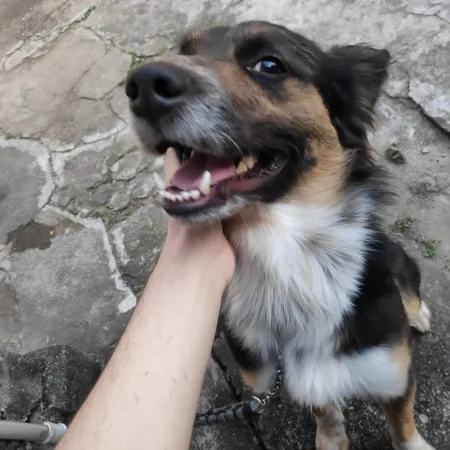
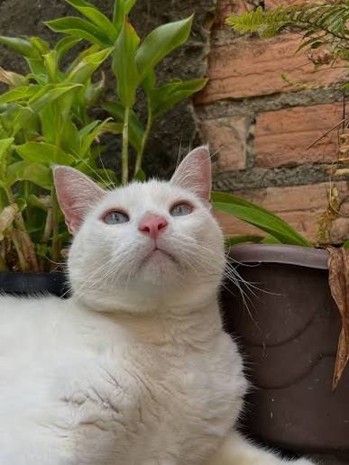
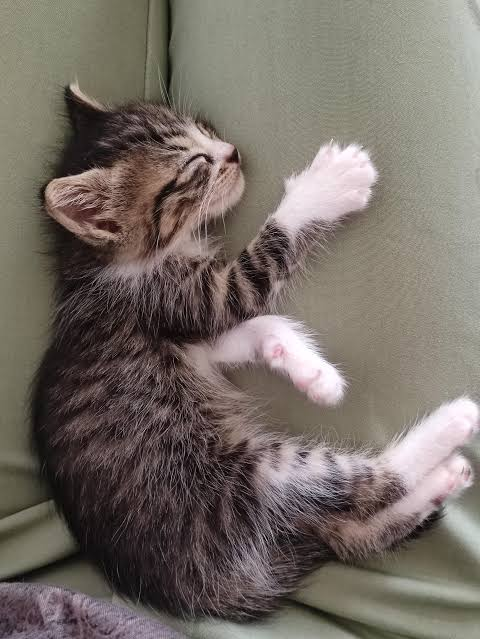
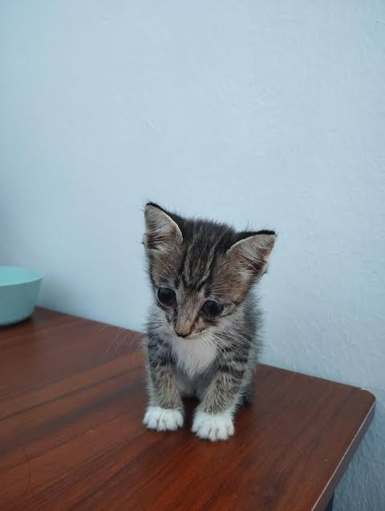
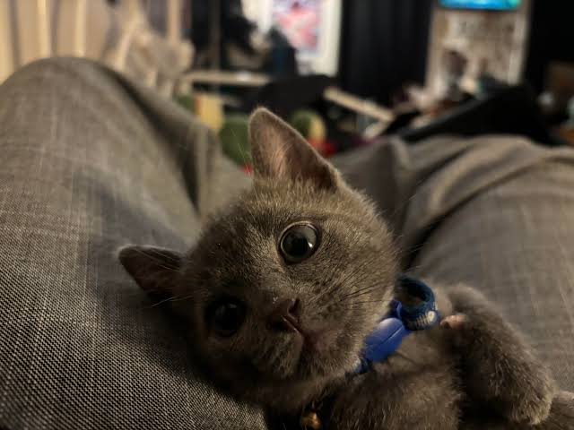

Luna
Canino
Raça: Vira-lata (SRD)
Idade: 2 Anos
Dócil e Brincalhona
Castrada e vacinada
Ver Mais sobre LunaConheça e adote seu novo melhor amigo!

Canino
Raça: Vira-lata (SRD)
Idade: 2 Anos
Dócil e Brincalhona
Castrada e vacinada
Ver Mais sobre Luna
Felino
Raça: Vira-lata (SRD)
Idade: 1 Ano
Ama caçar e brinquedos
Não Castrado mas é vacinado
Ver Mais sobre Buck
Canino
Raça: Malinois
Idade: 3 anos
Ex cão policial, treinada, energética
Ver Mais sobre Morgana
Canino
Raça: Vira-lata (SRD)
Idade: 3 Anos
Tranquila e dócil
Não Castrada, é vacinada e possui problemas respiratórios
Ver Mais sobre Mia
Felino
Raça: Vira-lata (SRD)
Idade: 7 Anos
Medrosa, dócil e odeia barulhos altos
Castrada e vacinada
Ver Mais sobre Winnie
Felino
Raça: Vira-lata (SRD)
Idade: 2 Meses
brincalhona, ama bolinhas de papel
Não Castrada, é vacinada
Irma da Zoe e Tom
Ver Mais sobre Blue
Felino
Raça: Vira-lata (SRD)
Idade: 2 Meses
Arteira, ama arranhadores
Não Castrada, é vacinada
Irma da Blue e Tom
Ver Mais sobre Zoe
Felino
Raça: Vira-lata (SRD)
Idade: 2 Meses
Ama petisco de peixe, frango e brincar com penas
Não Castrado, é vacinado
Irmão da Blue e Zoe
Ver Mais sobre Tom